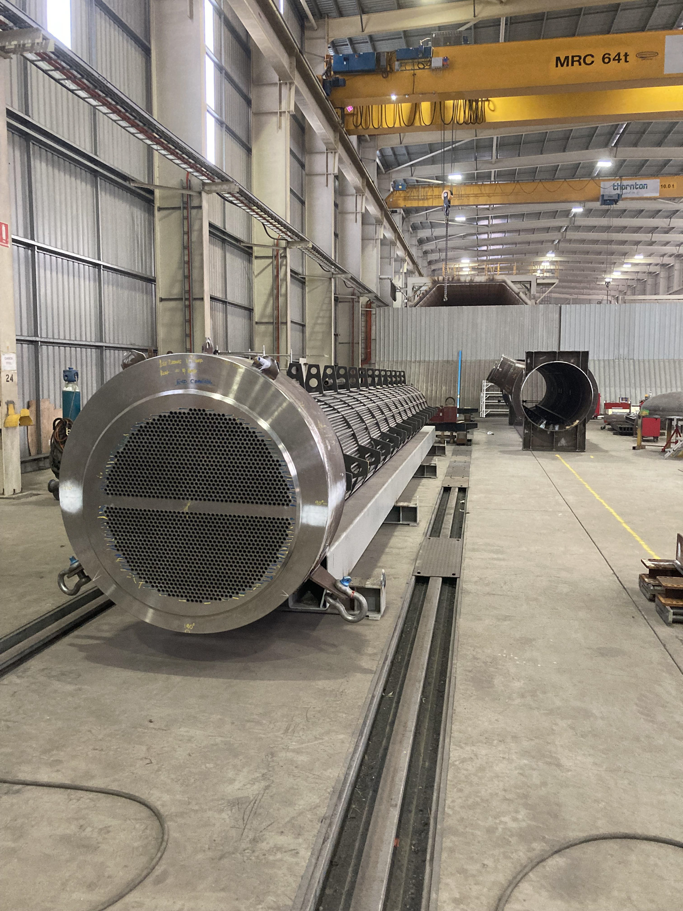
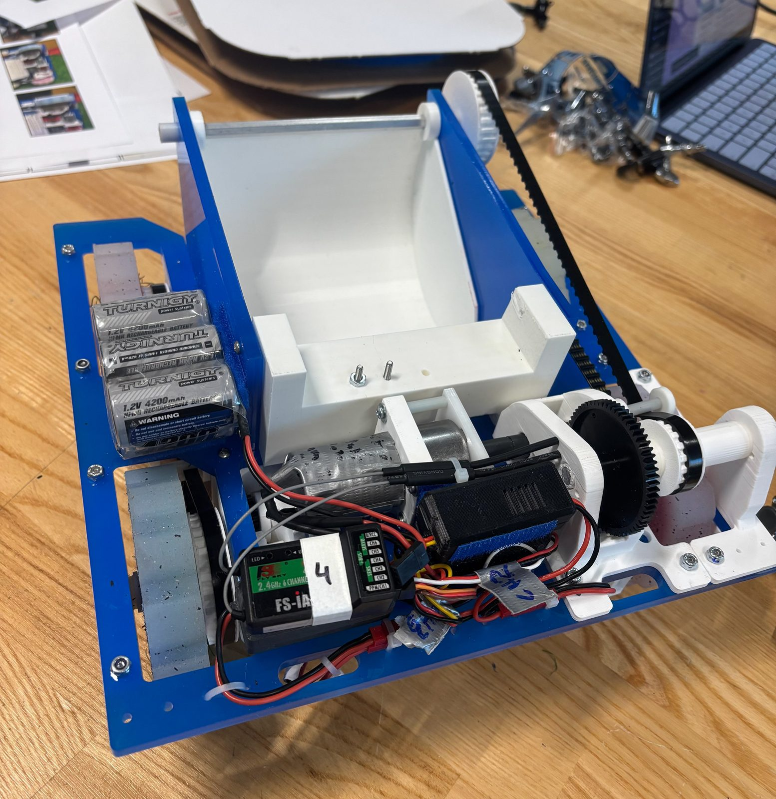
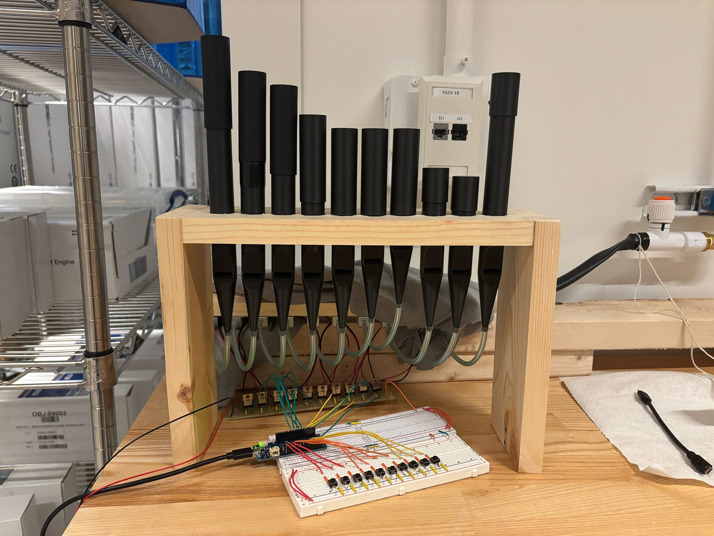
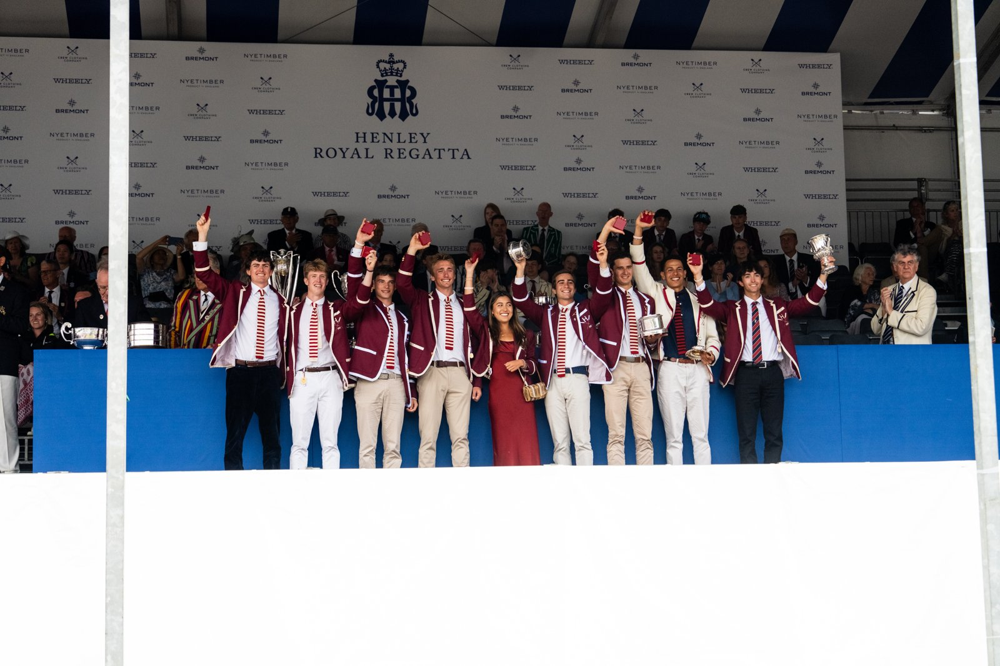
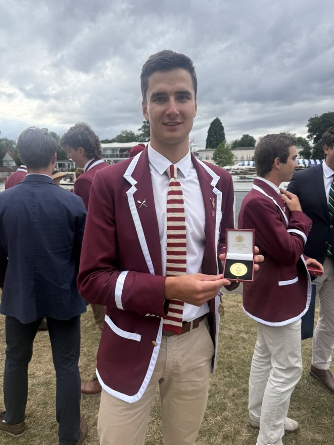

Charlie Rahdon
Mechanical engineering student at Harvard University, with hands-on fabrication experience and a growing focus on the energy sector.
Projects

Pressure Vessel Fabrication
Boilermaking and fit-up on pressure vessels and heat exchangers at Thornton Engineering.

Turf Wars Robot — Sooper Scooper 5000
A drivetrain-analysed, simplicity-first competition robot that won Harvard's Turf Wars.

Electro-Pneumatic Pipe Organ
A 10-pipe organ combining acoustic design, pneumatics, and Arduino-driven control.

Rowing — Harvard Lightweight Crew
Undefeated national champion and Henley Royal Regatta winner with Harvard's varsity lightweight eight.
About

I'm a third-year mechanical engineering student at Harvard University. From Lego robots to remote-control planes, I've been building things for as long as I can remember, an instinct that eventually led me to engineering as a discipline. Outside of the classroom, I'm also very involved athletically, having rowed the past two years in Harvard's undefeated lightweight varsity boat.
Before starting at Harvard, I took a gap year, during which I found a job at Thornton Engineering, assisting with the production of large pressure vessels. The work gave me a firsthand education not just in the engineering behind these structures, but in the manufacturing realities that shape their design — an insight that's hard to come by in a classroom. Working in that hands-on, industrial environment confirmed my interest in engineering as a career, and the scale of the vessels we built, destined for oil, gas, and resources clients, sparked a specific interest in the energy sector that has stuck with me since.
That experience has stayed with me throughout my time at Harvard. In ES51, our team's final project, a competition robot, pushed us through several design iterations before we landed on a mechanism simple enough to manufacture reliably within the constraints of the course. Having spent time on a fabrication floor, I found myself instinctively weighing manufacturability alongside performance, rather than treating it as an afterthought once the "ideal" design was on paper. That experience taught me firsthand that engineering which looks elegant on a drawing still has to be built by someone, often under real constraints of time, tooling, and tolerance.
That early exposure to the scale and complexity of energy infrastructure has only deepened since. The vessels and heat exchangers I helped build at Thornton were headed for facilities I'll likely never see in person, supporting processes I didn't fully understand at the time, and that gap between what I built and what I wanted to understand is part of what's drawn me back to the sector. I'm increasingly interested not just in the technical engineering of energy projects, but in the commercial and operational decisions that shape them — how projects get prioritised, financed, and delivered at scale. It's an industry undergoing real change, and I want to be part of understanding and contributing to both the engineering and the business behind that change.
Contact
Reach me at crahdon@college.harvard.edu.